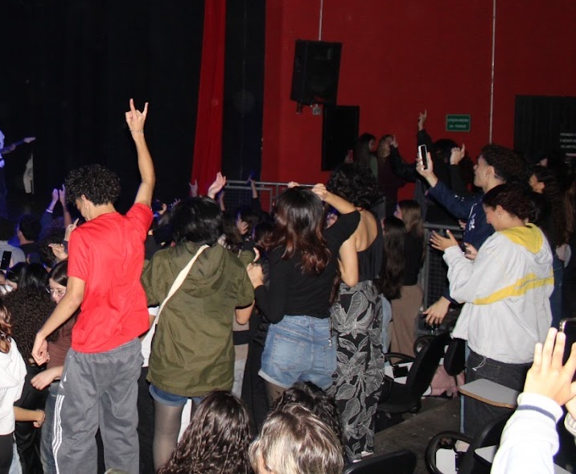

O QUE É?
Um sarau cultural aberto a todos os cursos da universidade, em que os alunos assumem o palco para apresentar o que quiserem:
- música ao vivo (qualquer estilo: rock, metal, rap, MPB, indie, eletrônica, acústico…),
- dança (hip-hop, contemporânea, funk, ballet, freestyle…),
- teatro curto, performance, stand-up, improviso,
- poesia falada ou cantada,
...ou qualquer outra forma de expressão artística.
